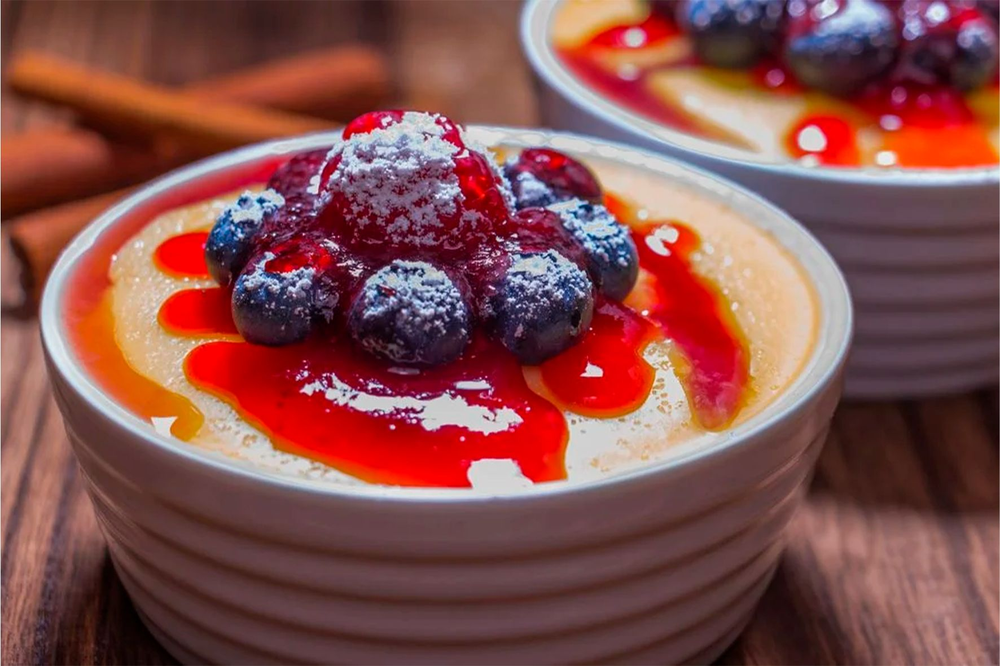
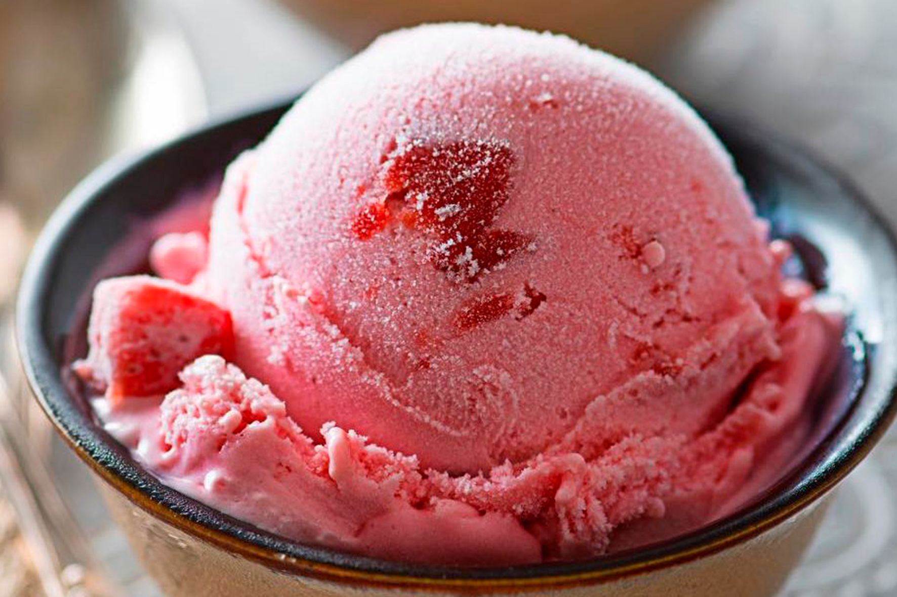
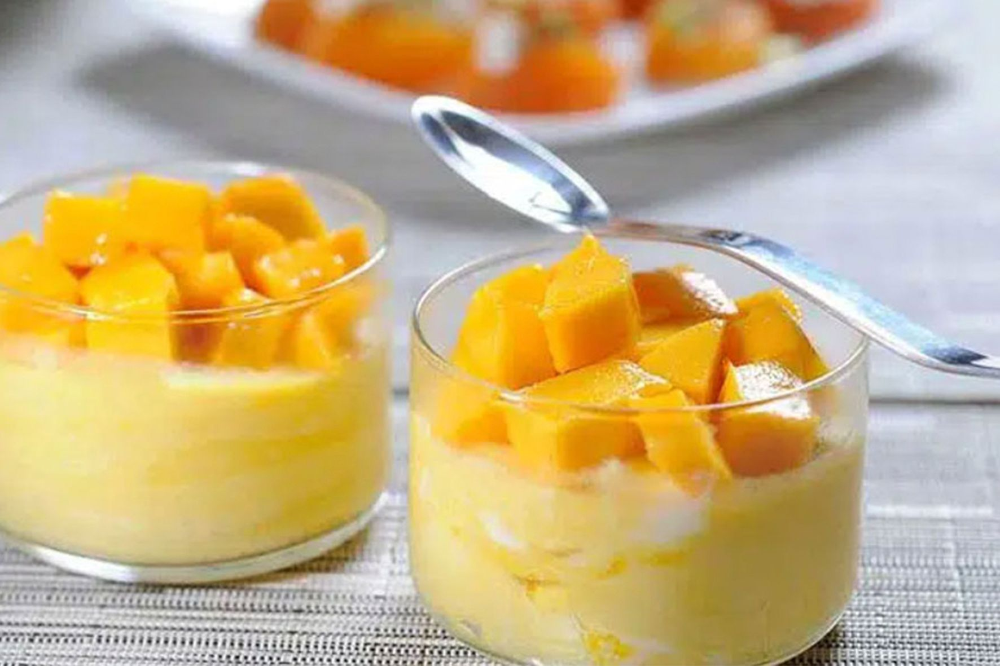

"Frutas frescas direto para você"
Pudim de Acerola
Receita simples e fácil para o fim de ano.
Ingredientes
- 1 lata de leite condensado
- 1 copo americano de leite
- 4 ovo
- 1 copo americano de polpa de acerola da barraca "Manoel frutas"
Modo de preparo
- Primeiro, lave bem as acerolas maduras e retire os talos.
- Em seguida, com as mãos, amasse-as e retire todas as sementes.
- Quando terminar, use a lata de leite condensado como medida (1 lata cheia de polpa pura).
- Em seguida, bata no liquidificador os ovos, o leite, o leite condensado e a polpa.
- Coloque em uma forma de furo central.
- Asse em banho-maria por 25 minutos ou até dar ponto.
- Retire do forno e deixe esfriar.
- Leve à geladeira.
- Depois de gelado, é só desenformar.
- Decore o prato com geleia de acerola.
- Dica: Misture açúcar à sobra da polpa e leve ao fogo, mexendo sempre, até engrossar.
- Deixe esfriar e leve à geladeira.
- Depois é só usar como geleia para decorar.
Bolo de Laranja com Calda

Receita simples e rápida para fazer de sobremesa ou para o lanche da tarde.
Ingredientes
- 4 ovos
- 200 ml de suco natural de laranja fresca, direto da Barraca "Manoel Frutas" (2 e 1/2 laranjas)
- 1/2 xícara (chá) de óleo
- 1 e 1/2 xícara (chá) de açucar
- 2 xícaras (chá) de farinha de trigo
- 1 colher (sopa) de fermento em pó
- 1 pitada de sal
Calda
- 400 ml de suco natural de laranja fresca, direto da Barraca "Manoel Frutas" (5 laranjas)
- 1/2 xícara de açúcar
Modo de preparo
- Primeiro, bata os ovos com o açucar em uma batedeira, até ficar homogêneo.
- Acrescente o óleo e o suco de laranja.
- Em seguida, penere e adicione a farinha de trigo, o sal e o fermento.
- Despeje a massa em uma forma de bolo untada com margarina e farinha.
- Leve para assar, em forno pré aquecido a 180 graus, de 40 à 50 minutinhos.
- Faça o teste do palito para ver se o bolo está bem assado.
Calda:
- Coloque o suco de laranja (da barraca "Manoel Frutas") e o açucar em uma panela.
- Cozinhe em fogo baixo, por cerca de 20 minutos, mexendo de vez em quando, até a calda reduzir e engrossar.
- Com o bolo já frio, desenforme e coloque em um prato, depois regue com a calda.
Bolo de Maçã Fuji

Essa receita é perfeita para acompanhar um café fresquinho, principalmente em dias frios.
Com Leve toque de canela e um sabor único.
Ingredientes
- 3 ovos
- 2 xícaras de farinha de trigo
- 1 colher de sopa de fermento em pó
- 1 pitada de sal
- 3 maçãs fuji, tamanho médio, da barraca "Manoel frutas"
- 2 xícaras de açúcar
- 1 colher (sopa) de canela em pó
- 1 xícara de óleo vegetal
Modo de preparo
- Unte com óleo e canela/farinha de trigo uma fôrma com furo no meio.
- Em uma tigela grande, peneire a farinha, a canela e o açúcar.
- Acrescente os demais ingredientes secos na tigela, misture e reserve.
- Descasque as maçãs, reservando as cascas.
- Pique as maçãs em pequenos cubos.
- Bata os ovos, o óleo e as cascas de maçã no liquidificador.
- Despeje essa mistura na tigela com os outros ingredientes e misture tudo.
- Junte as maçãs picadas, misture e despeje na assadeira.
- Deixe assando por cerca de 40 a 50 minutos em forno médio.
- Depois de pronto polvilhar açúcar e canela.
Dica: se preferir bata tudo no liquidificar, colocando aos poucos os ingredientes secos.
Sorvete de Morango
Receita simples e rápida, para curtir esse verão da forma mais deliciosa.
Ingredientes
- 1 lata de leite condensado
- 3 xícaras de morangos(da barraca "Manoel frutas") picados
- 2 caixas de creme de leite
- 1 colher (sopa) de suco de limão *direto da barraca "Manoel frutas"
Modo de preparo
- Bata, no liquidificador, o Leite condensado, 2 xícaras de morangos, o Creme de Leite e o suco de limão até ficar homogêneo.
- Em seguida, despeje em um recipiente refratário, cubra com plástico-filme e leve ao freezer por cerca de 4 horas.
- Depois, retire e bata mais uma vez a mistura no liquidificador, acrescentando 1 xícara de morangos picados.
- Leve de volta ao freezer, por cerca de 2 horas ou até firmar.
Mousse cremosa de Manga
Para refrescar aquele dia de calor e tornar seu dia mais gostoso, a melhor opção é um mousse de manga super cremoso.
Ingredientes
- 2 ou 3 mangas *direto da barraca "Manoel frutas"
- 1 caixa de creme de leite
- 1 caixa de leite condensado
Modo de preparo
- Coloque no liquidificador: o leite condensado, o creme de leite e as mangas cortadas em cubos.
- Bata tudo, até ficar um creme homogêneo.
- Coloque a mousse em copos, vasilhas ou tigelas.
- Deixe no congelador por 5 a 10 minutos para firmar.